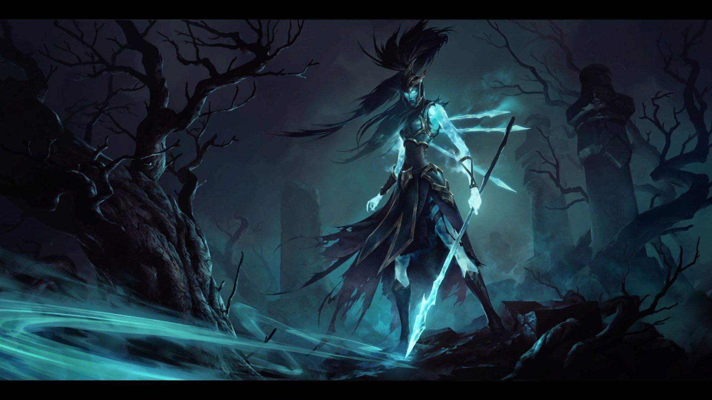

tu devrais essayer Kalista

kalista est le tirreur le plus boudé de la faille, notamment car elle est extremement dur à jouer, elle à la capacité d'effectuer une déplacement léger à chaque attaque ce qui fait qu'il faut beaucoup se concentrer pour la jouer mais elle n'en reste pas moins destructrice bien jouer